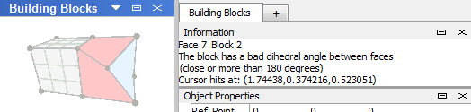
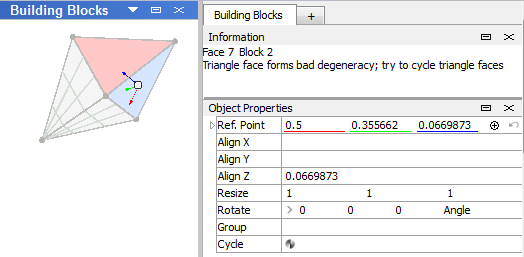
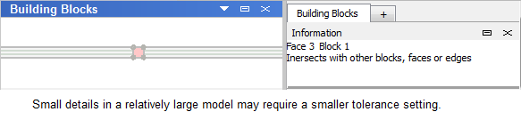
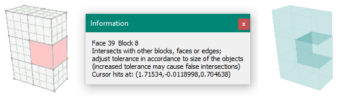
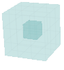

校验模型
校验工具按钮（）有一个包含用于校验模型命令的菜单。模型需要处于有效状态才能生成网格单元。
校验
校验命令将扫描整个模型以查找无效块体。如果所有块体都有效，控制台窗格会予以说明。
如果发现无效块体，它们将显示为红色，并且标有“显示坏块”的工具按钮（ ）将变为可用。
）将变为可用。
如果将鼠标指针悬停在坏块上并查看信息控件组，即可找到该块体被视为“坏”或无效的原因。
速度：每当移动控制点或棱边端点时，都会仅对受影响的块体自动执行校验。如果您使用 drape 命令，可能会涉及大量块体。当模型中控制点超过几百个时，执行校验所需的时间会大幅增加。如果校验变得过于耗时，您可能需要在建模工作接近完成之前移除控制点，然后再重新添加。从棱边上移除所有控制点的一种快捷方法是：选中一条棱边，按 Control-A 选中所有棱边，然后打开所选棱边的上下文菜单并选择“使棱边变为直线”命令。对于面，先选中一个面，然后按 Control-A，再在对象属性控件组中将面控制点数量输入为零。
二面角不良
二面角不良（两个面之间的夹角 >= 180 度）可以手动修复。

退化不良
在某些情况下，三角形面可能造成退化不良。要修复它，您可以尝试选中涉及的一个三角形面，然后单击对象属性控件组中的循环按钮。

与其他块体相交
当您看到因相交而出现的坏块时，它可能是实际相交，也可能是容差设置过高导致的。后一种情况可能通过降低添加块体工具（ ）的容差设置（tolerance setting）来解决。
）的容差设置（tolerance setting）来解决。

第一种情况（即实际相交）可以通过使用显示曲面功能而变得更明显。

在上面所示的情况下，坏块看起来可能与相邻块体相连，但当您显示曲面后，可以看到它不与任何其他块体共享面，尽管它确实与至少一个其他块体相交。
显示曲面
显示曲面命令会更改显示方式，使内部曲面更加明显。您可以使用鼠标右键和鼠标滚轮来操纵视图。在窗格中单击鼠标左键将恢复正常显示。
此示例显示了立方体中心的空隙。

仅生成六面体
仅生成六面体命令将遍历整个模型，并拆分任何非六面体块体以生成六面体。这可以提高网格单元的质量。
| 这些内容对您有帮助吗？… | FLAC3D © 2019, Itasca | 原文更新于 2020 年 10 月 8 日 |